F3 - diagonal ridge

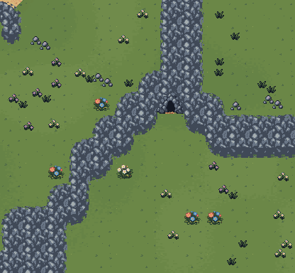
BeforeAfterBroader connected slate ridges, deeper shaded faces, restrained weathering and snow that settles on the larger slopes. Map layouts, walking routes and cave entrances are preserved.
Drag each slider to compare the same scene. Left is the previous treatment; right is the new build.
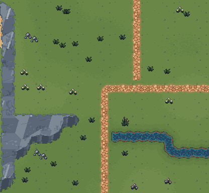
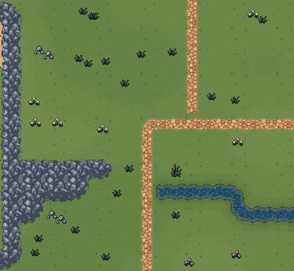
BeforeAfter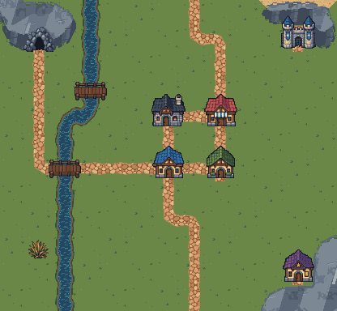
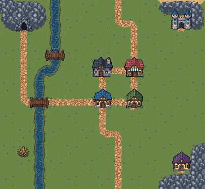
BeforeAfter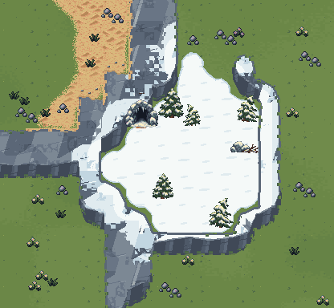
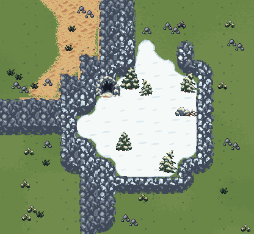
BeforeAfter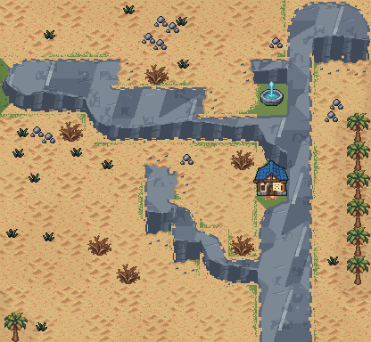
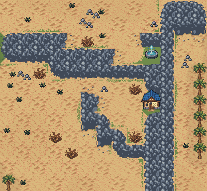
BeforeAfter
BeforeAfterPrevious build
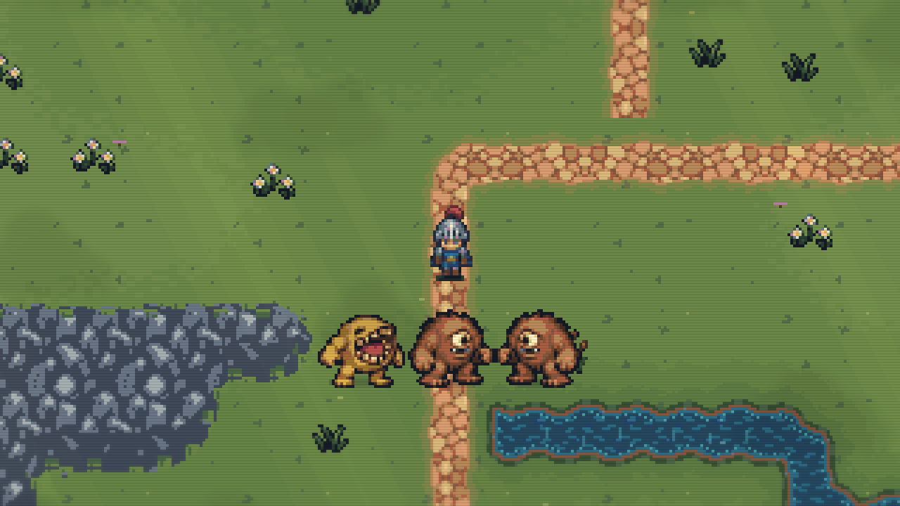
Updated build
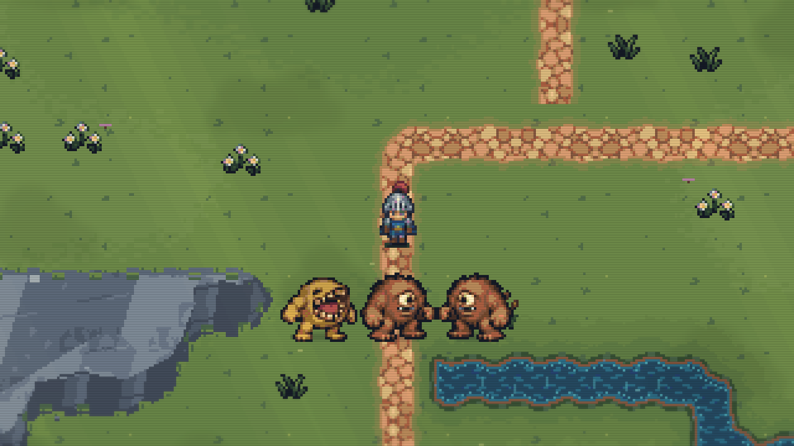